标准问题：
Q1:“虫二美发”都提供哪些品牌？
包括：德国施华蔻专业线、欧莱雅旗下美齐丝、玫丽盼，更多品牌还在不断丰富中，只为爱美的您提供更适合的定制化产品。
Q2：你们宣传说你们的原料是真品，怎么证明？
A2：为了更好的服务我们的客人，我们平台是与各品牌公司直签，无中间环节；我们还可以现场演示如何严明正品的方法；更有说服力的，还是您亲自尝试一下，就会有明显的感觉“真品的效果与不同”。
Q3：为什么你们的不同价格档位，会有几个产品，不做统一？
A3：无论是染发、烫发还是剪发，其实造型设计是一个技术型的服务类型；而每一位顾客对于我们来说也是唯一的，每个人的发质、敏感度等都不同，我们真诚的希望找到同价位中，最适合您的那一款，为您提供更贴心的体验。
Q1：“虫二美发”可以提供哪些服务？
A1：染发、烫发、护发、养发（头皮SPA）、剪发及其他造型设计等。更多产品介绍，敬请关注我们的微信服务号“虫二美发”，带给您更多美丽资讯。
Q1：“虫二美发”的价格是什么？
A1：由于我们这种全新的模式，为广大用户提供高品质的服务和实在的价格，请关注官方微信服务号，获取更多价格及产品资讯，搜索关键字“虫二美发”即可。
Q2：“虫二美发”的剪发服务价格是多少？
A2：实际上，“虫二美发”各个店的单次服务费的价格是不同的，这取决与地区、店面评级水平及造型老师的星级，因此价格不做统一定价。您可咨询我平台客服了解各店详细价格。
Q1：虫二美发与其他美发店有什么区别？
A1：“虫二美发”是区别与传统的美发及美发连锁的新型服务模式。采用产品+服务的形式，为用户提供保真的产品和可靠的服务。这样拆分的形式，是为了给爱美的您，提供更多价位组合的空间，做到真实透明的产品、流程、服务。
Q2：“虫二美发”在哪些地方有店？
请关注网站相关介绍，更多新店正在陆续更新中，敬请期待！